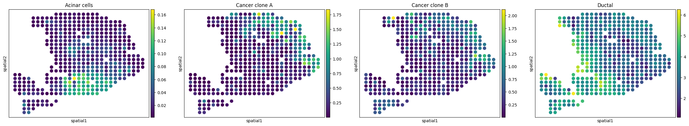

Application with new data
This tutorial demonstrates deconvolution on new ST PDAC data using SODB and Tangram.
This tutorial refers to the following tutorial at https://squidpy.readthedocs.io/en/stable/external_tutorials/tutorial_tangram.html. At the same time, the way of loadding data is modified by using SODB.
（需要增加单细胞数据链接）
Import packages and set configurations
[1]:
# Import several Python packages, including:
# scanpy: a Python package for single-cell RNA sequencing analysis
import scanpy as sc
# squidpy: a Python package for spatial transcriptomics analysis
import squidpy as sq
# numpy: a Python package for scientific computing with arrays
import numpy as np
# pandas: a Python package for data manipulation and analysis
import pandas as pd
# anndata: a Python package for handling annotated data objects in genomics
import anndata as ad
# pathlib: a Python module for working with file system paths
import pathlib
# matplotlib: a Python plotting library
import matplotlib.pyplot as plt
import matplotlib as mpl
# skimage: a Python package for image processing
import skimage
[14]:
# Import tangram for spatial deconvolution
import tangram as tg
[86]:
# Print a header message, and the version of the squidpy and tangram packages
sc.logging.print_header()
print(f"squidpy=={sq.__version__}")
print(f"tangram=={tg.__version__}")
scanpy==1.9.1 anndata==0.8.0 umap==0.5.3 numpy==1.22.4 scipy==1.9.3 pandas==1.5.1 scikit-learn==1.1.3 statsmodels==0.13.5 python-igraph==0.10.2 pynndescent==0.5.8
squidpy==1.2.3
tangram==1.0.3
Load a single cell dataset
[2]:
# Use read_csv to load "pd_sc" and "pd_sc_meta"
pd_sc = pd.read_csv('data/pdac/sc_data.csv')
pd_sc_meta = pd.read_csv('data/pdac/sc_meta.csv')
[3]:
# Set index using the 'Unnamed: 0' column for "pd_sc"
pd_sc = pd_sc.set_index('Unnamed: 0')
[4]:
# Set index using the 'Cell' column for "pd_sc_meta"
pd_sc_meta = pd_sc_meta.set_index('Cell')
[5]:
# Converte pandas's dataframes into numpy arrays
sc_genes = np.array(pd_sc.index)
sc_obs = np.array(pd_sc.columns)
# Transpose array
sc_X = np.array(pd_sc.values).transpose()
[6]:
# Initialize an AnnData object using "sc_X", "sc_genes" and "sc_obs"
adata_sc = ad.AnnData(sc_X)
adata_sc.var_names = sc_genes
adata_sc.obs_names = sc_obs
# Assign the cell type labels to "adata_sc.obs['CellType']"
adata_sc.obs['CellType'] = pd_sc_meta['Cell_type'].values
/tmp/ipykernel_119901/662840930.py:2: FutureWarning: X.dtype being converted to np.float32 from float64. In the next version of anndata (0.9) conversion will not be automatic. Pass dtype explicitly to avoid this warning. Pass `AnnData(X, dtype=X.dtype, ...)` to get the future behavour.
adata_sc = ad.AnnData(sc_X)
[7]:
# Print out the metadata of adata_sc
adata_sc
[7]:
AnnData object with n_obs × n_vars = 1926 × 19104
obs: 'CellType'
Streamline development of loading spatial data with SOBD
[8]:
# Import pysodb package
# Pysodb is a Python package that provides a set of tools for working with SODB databases.
# SODB is a format used to store data in memory-mapped files for efficient access and querying.
# This package allows users to interact with SODB files using Python.
import pysodb
[9]:
# Initialization
sodb = pysodb.SODB()
[10]:
# Define the name of the dataset_name and experiment_name
dataset_name = 'moncada2020integrating'
experiment_name = 'GSM3036911_spatial_transcriptomics'
# Load a specific experiment
# It takes two arguments: the name of the dataset and the name of the experiment to load.
# Two arguments are available at https://gene.ai.tencent.com/SpatialOmics/.
adata_st = sodb.load_experiment(dataset_name,experiment_name)
download experiment[GSM3036911_spatial_transcriptomics] in dataset[moncada2020integrating]
100%|██████████| 25.4M/25.4M [00:13<00:00, 2.00MB/s]
load experiment[GSM3036911_spatial_transcriptomics] in dataset[moncada2020integrating]
Preparation
[11]:
# Perform differential gene expression analysis across 'CellType' in 'adata_sc'
sc.tl.rank_genes_groups(adata_sc, groupby="CellType", use_raw=False)
WARNING: Default of the method has been changed to 't-test' from 't-test_overestim_var'
[12]:
# Create a Pandas DataFrame called "markers_df" by extracting the top 100 differentially expressed genes from 'adata_sc'
markers_df = pd.DataFrame(adata_sc.uns["rank_genes_groups"]["names"]).iloc[0:100, :]
# Create a NumPy array called "genes_sc" by extracting the unique values from the "value" column of a melted version of the "markers_df"
genes_sc = np.unique(markers_df.melt().value.values)
# Extracte the names of genes from "adata_st"
genes_st = adata_st.var_names.values
# Creates a Python list called "genes"
# Contain the intersection of genes identified as differentially expressed in "genes_sc" and genes detected in "genes_st".
genes = list(set(genes_sc).intersection(set(genes_st)))
# The length of "genes"
len(genes)
[12]:
1133
Perform Tangram for alignment
[15]:
# Use the Tangram to align the gene expression profiles of "adata_sc" and "adata_st" based on the shared set of genes identified by the intersection of "genes_sc" and "genes_st".
tg.pp_adatas(adata_sc, adata_st, genes=genes)
INFO:root:1098 training genes are saved in `uns``training_genes` of both single cell and spatial Anndatas.
INFO:root:13775 overlapped genes are saved in `uns``overlap_genes` of both single cell and spatial Anndatas.
INFO:root:uniform based density prior is calculated and saved in `obs``uniform_density` of the spatial Anndata.
INFO:root:rna count based density prior is calculated and saved in `obs``rna_count_based_density` of the spatial Anndata.
[16]:
# Use the map_cells_to_space function from the tangram to map cells from "adata_sc")" onto "adata_st".
# The mapping use "cells" mode, which assign each cell from adata_sc to a location within the spatial transcriptomics space based on its gene expression profile.
ad_map = tg.map_cells_to_space(
adata_sc,
adata_st,
mode="cells",
# target_count=adata_st.obs.cell_count.sum(),
# density_prior=np.array(adata_st.obs.cell_count) / adata_st.obs.cell_count.sum(),
num_epochs=1000,
device="cpu",
)
INFO:root:Allocate tensors for mapping.
INFO:root:Begin training with 1098 genes and rna_count_based density_prior in cells mode...
INFO:root:Printing scores every 100 epochs.
Score: 0.293, KL reg: 0.029
Score: 0.548, KL reg: 0.001
Score: 0.550, KL reg: 0.001
Score: 0.551, KL reg: 0.001
Score: 0.551, KL reg: 0.001
Score: 0.551, KL reg: 0.001
Score: 0.551, KL reg: 0.001
Score: 0.551, KL reg: 0.001
Score: 0.551, KL reg: 0.001
Score: 0.551, KL reg: 0.001
INFO:root:Saving results..
[17]:
# Project "CellType" annotations from a single-cell RNA sequencing (scRNA-seq) dataset onto a spatial transcriptomics dataset, based on a previously computed cell-to-space mapping
tg.project_cell_annotations(ad_map, adata_st, annotation="CellType")
INFO:root:spatial prediction dataframe is saved in `obsm` `tangram_ct_pred` of the spatial AnnData.
[18]:
# Create new columns in "adata_st.obs" that correspond to the values in "adata_st.obsm['tangram_ct_pred']"
for ct in adata_st.obsm['tangram_ct_pred'].columns:
adata_st.obs[ct] = np.array(adata_st.obsm['tangram_ct_pred'][ct].values)
[19]:
# Print adata_st.obsm['tangram_ct_pred']
adata_st.obsm['tangram_ct_pred']
[19]:
| Acinar cells | Ductal | Cancer clone A | Cancer clone B | mDCs | Tuft cells | pDCs | Endocrine cells | Endothelial cells | Macrophages | Mast cells | T cells NK cells | Monocytes | RBCs | Fibroblasts | |
|---|---|---|---|---|---|---|---|---|---|---|---|---|---|---|---|
| spots | |||||||||||||||
| 10x10 | 0.006444 | 4.729997 | 0.110092 | 0.395633 | 0.496347 | 0.013628 | 0.054951 | 0.005291 | 0.094123 | 0.333470 | 0.052907 | 0.180649 | 0.056653 | 0.026625 | 0.037472 |
| 10x13 | 0.002064 | 4.798337 | 0.283907 | 0.073102 | 0.127184 | 0.064640 | 0.024021 | 0.005458 | 0.016583 | 0.055181 | 0.039184 | 0.095868 | 0.050412 | 0.010460 | 0.005281 |
| 10x14 | 0.013010 | 4.492909 | 0.050775 | 0.310652 | 0.159801 | 0.016485 | 0.087723 | 0.003860 | 0.034731 | 0.128919 | 0.092330 | 0.058362 | 0.000047 | 0.011527 | 0.003467 |
| 10x15 | 0.032894 | 3.715882 | 0.069235 | 0.112658 | 0.133705 | 0.064493 | 0.062851 | 0.004080 | 0.051006 | 0.099198 | 0.036446 | 0.060453 | 0.105931 | 0.021350 | 0.003964 |
| 10x16 | 0.007706 | 3.578493 | 0.032234 | 0.034689 | 0.000062 | 0.087510 | 0.068135 | 0.004603 | 0.007516 | 0.027256 | 0.045591 | 0.283022 | 0.016175 | 0.003633 | 0.008083 |
| ... | ... | ... | ... | ... | ... | ... | ... | ... | ... | ... | ... | ... | ... | ... | ... |
| 9x29 | 0.003938 | 4.518909 | 0.000118 | 0.422693 | 0.190997 | 0.011341 | 0.017632 | 0.005462 | 0.057274 | 0.027889 | 0.031566 | 0.149288 | 0.000031 | 0.005100 | 0.000124 |
| 9x30 | 0.003119 | 2.801348 | 0.038468 | 0.479157 | 0.111810 | 0.071946 | 0.017383 | 0.005246 | 0.017669 | 0.057799 | 0.117123 | 0.168534 | 0.080440 | 0.002571 | 0.008973 |
| 9x31 | 0.008436 | 1.421516 | 0.347862 | 0.302915 | 0.107531 | 0.017159 | 0.073046 | 0.003994 | 0.008288 | 0.380764 | 0.000079 | 0.168885 | 0.022301 | 0.003253 | 0.005747 |
| 9x32 | 0.055819 | 2.081752 | 0.022799 | 0.000409 | 0.049651 | 0.033693 | 0.000310 | 0.008593 | 0.030207 | 0.070957 | 0.031255 | 0.084072 | 0.022005 | 0.003457 | 0.002862 |
| 9x33 | 0.009596 | 1.582193 | 0.001093 | 0.143309 | 0.026752 | 0.037170 | 0.016511 | 0.005122 | 0.016078 | 0.027282 | 0.022464 | 0.042276 | 0.031942 | 0.019758 | 0.000276 |
428 rows × 15 columns
[20]:
# Create a spatial scatter plot showing the distribution of different cell types
sc.pl.embedding(
adata_st,
basis='spatial',
color=['Acinar cells','Cancer clone A','Cancer clone B','Ductal'],
# color='leiden'
)
